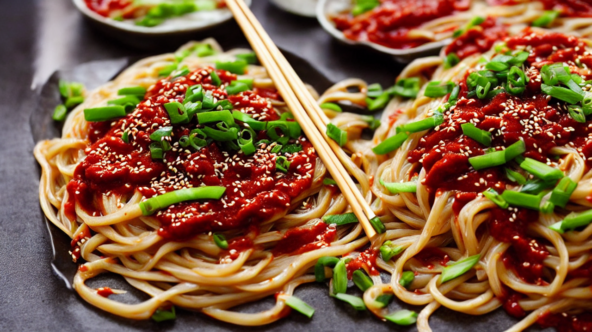
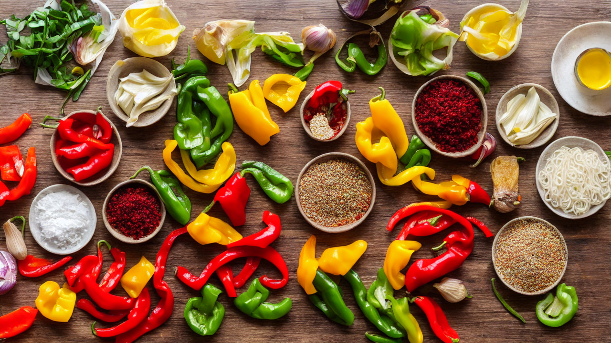
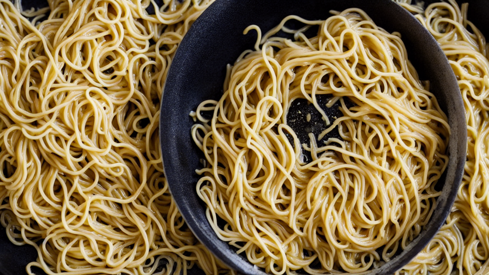
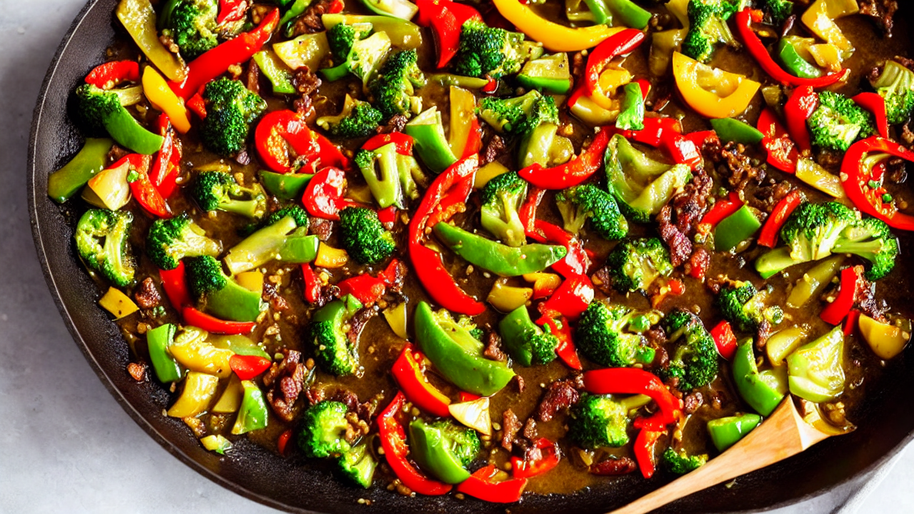
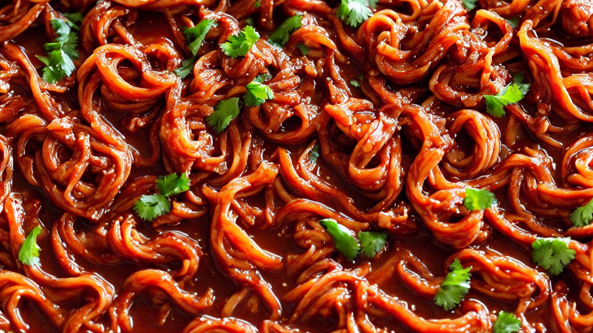
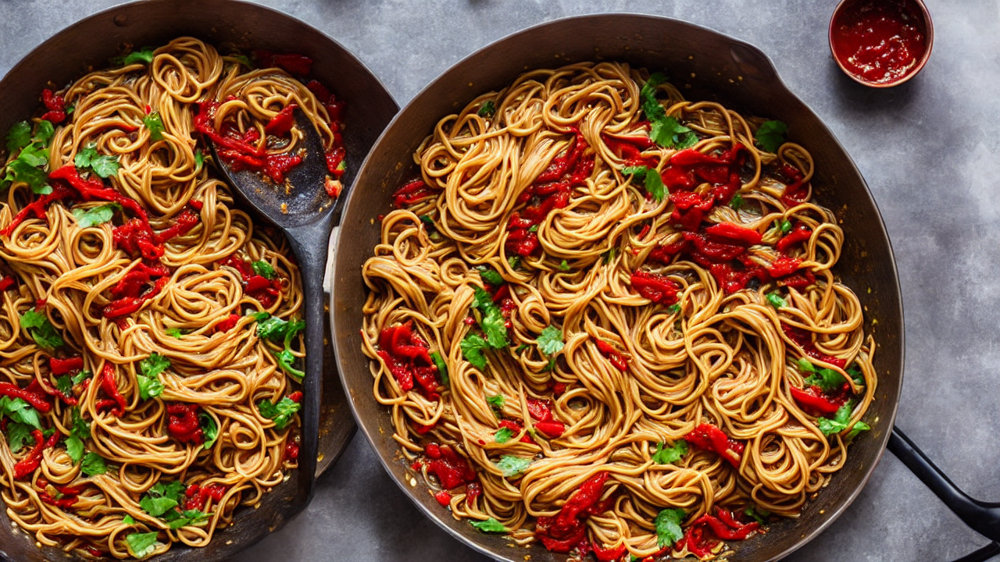
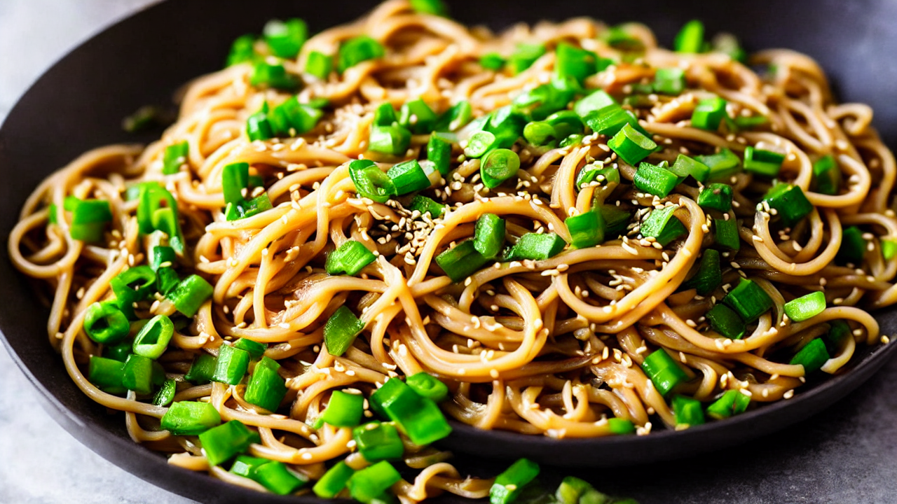

Spicy Korean Fire Noodles Recipe | 15-Minute Flavor Bomb!
Crave this fiery Korean noodle dish with a spicy kick! Perfect for quick weeknight meals. Learn to make it at home with easy steps. Subscribe for more Korean cuisine hacks!
Ingredients
- your ingredients: ramen noodles
- veggies
- spicy sauce
- garlic
- protein of choice
- Everything you need is in one bowl!
Instructions

This Spicy Korean Fire Noodle dish is so good, you'll never order takeout again! Let's make it together in 15 minutes.

Grab your ingredients: ramen noodles, veggies, spicy sauce, garlic, and protein of choice. Everything you need is in one bowl!

Boil noodles until al dente. Drain and set aside. The perfect base for our spicy masterpiece!

Sauté garlic, bell peppers, and broccoli until tender. Add chili flakes for that fiery kick!
Add your protein—chicken, tofu, or shrimp—and cook until golden. Protein is the star of this dish!

Pour in the spicy Korean sauce and stir until everything is coated. The aroma will hit you like a flavor bomb!

Toss everything together until the flavors meld. Add a splash of soy sauce for extra depth and color!

Plate with a sprinkle of sesame seeds and green onions. Enjoy this spicy masterpiece—subscribe for more recipes like this!
Recommended Kitchen Essentials
Every great recipe starts with great tools. Here are our top picks to make cooking easier and more enjoyable:
Support Quick Bites Kitchen — When you purchase through our links, we may earn a small commission at no extra cost to you. This helps us keep creating free recipes for everyone. Thank you!